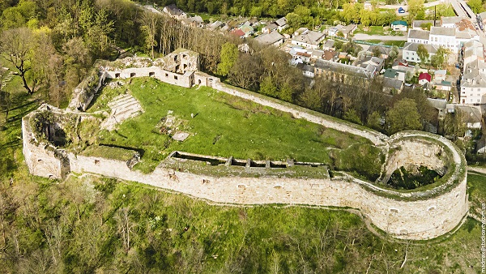
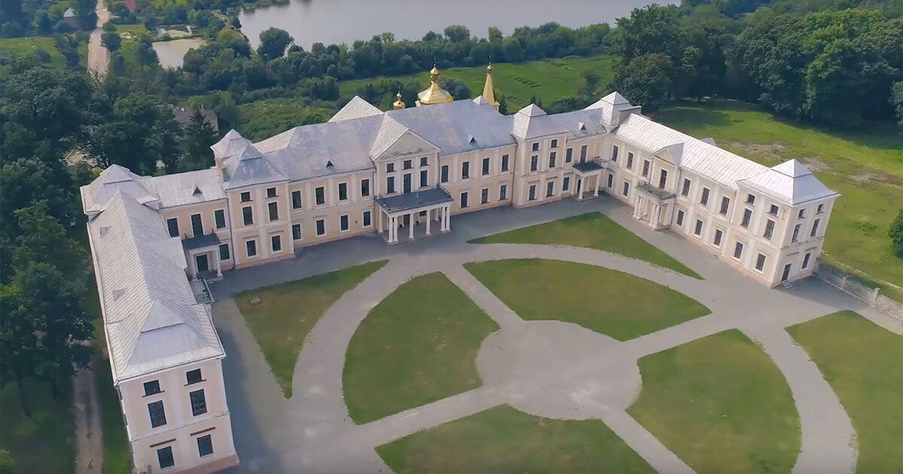
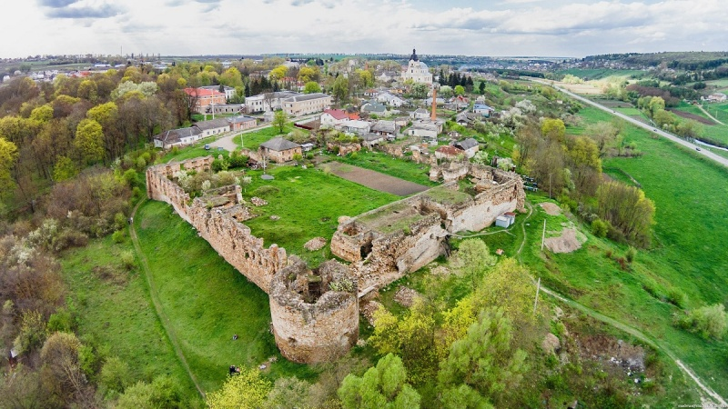

Збаразький замок — один із найкраще збережених. Його називають “перлиною Поділля” або “маленьким Вавелем”. Тут проходили історичні битви, а тепер діє музей, де оживають події XVII століття.

Ви знали, що саме Тернопільщина має найбільшу кількість замків серед усіх областей України? На її території збереглося понад 30 старовинних фортець і замкових комплексів, кожен із яких дихає історією та легендами. Колись ці неприступні твердині боронили українські землі від ворогів, а сьогодні вони перетворилися на унікальні туристичні перлини. Подорожуючи Тернопільщиною, ви ніби переноситесь у минуле — у світ лицарів, князів і козацької відваги.
Збаразький замок — один із найкраще збережених. Його називають “перлиною Поділля” або “маленьким Вавелем”. Тут проходили історичні битви, а тепер діє музей, де оживають події XVII століття.

Теребовлянський замок височіє на високому пагорбі, нагадуючи про славетну епоху захисників краю. Звідси відкривається дивовижна панорама міста та долини річки Серет.
Вишнівецький замок, який називають "українським Версалем", розташований не в місті Тернополі, а в селищі Вишнівець, що в Тернопільській області. Історично це була родова резиденція князів Вишневецьких.


Микулинецький замок зачаровує тишею і таємничістю. Його стіни, обвиті плющем, ніби зберігають пам’ять про давні кохання та битви.
Подорож Тернопільщиною — це мандрівка у часі. Тут кожен замок розповідає історію, яку хочеться слухати знову і знову.